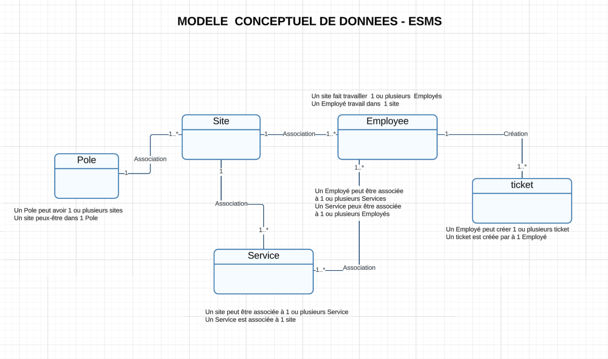
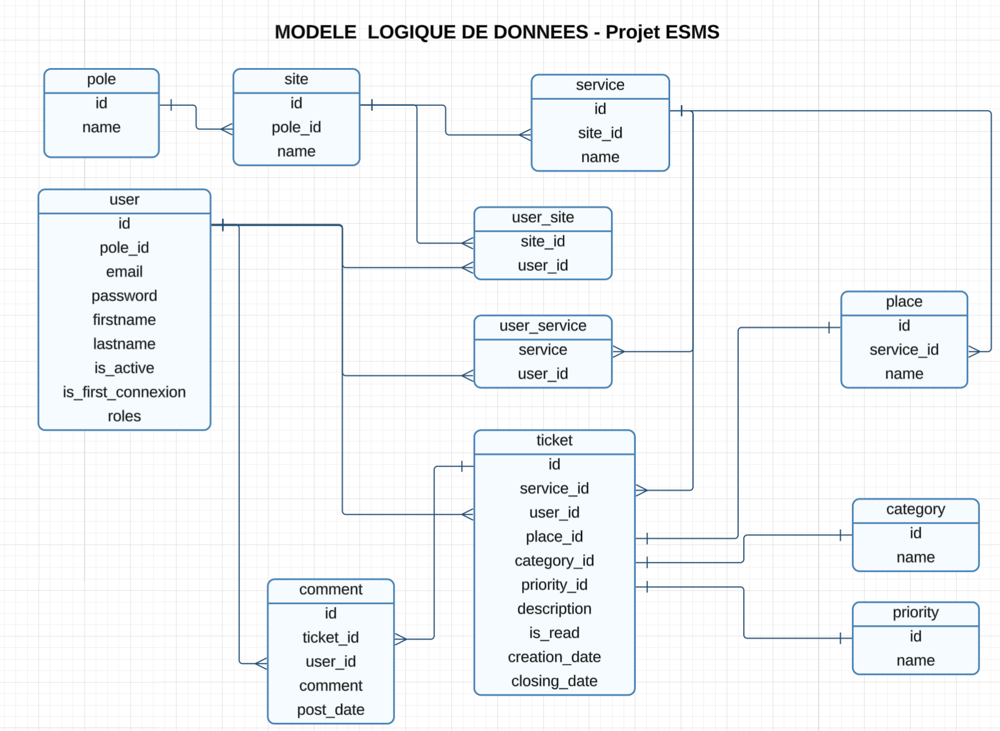

Le module DATABASE constitue la fondation du projet ESMS. Il définit l’ensemble des entités, relations et contraintes permettant d’assurer la cohérence, la sécurité et la performance du système d’information.
La modélisation de la base de données db_esms a été la première étape structurante de mon projet. L'objectif était de créer une architecture relationnelle capable de refléter fidèlement l'organisation complexe d'un établissement médico-social tout en garantissant l'intégrité des données.


Le MLD ci-dessus détaille la structure relationnelle de la base de
données db_esms. Il intègre l'ensemble des tables
gérées via l'ORM Doctrine de Symfony :
user couplée aux tables d'association
user_site et user_service permet
d'affecter finement les droits selon le personnel et les
structures.
ticket est qualifiée par des tables de
référence (category, priority,
place) et enrichie par un système de suivi
chronologique (comment).
pole → site →
service) reflète l'organisation
multi-établissements du secteur médico-social.
Un technicien affecté au Pole 1 -> Site 1 -> Service 1 ne peut
consulter que les tickets de ce service. Cette restriction est
gérée via les tables user_site, user_service et
ticket, garantissant une sécurité et une cohérence
métier essentielles dans un ESMS.
Le secteur médico-social repose sur une organisation multi-établissements structurée en pôles, sites et services. La base de données db_esms reflète cette réalité terrain, permettant :